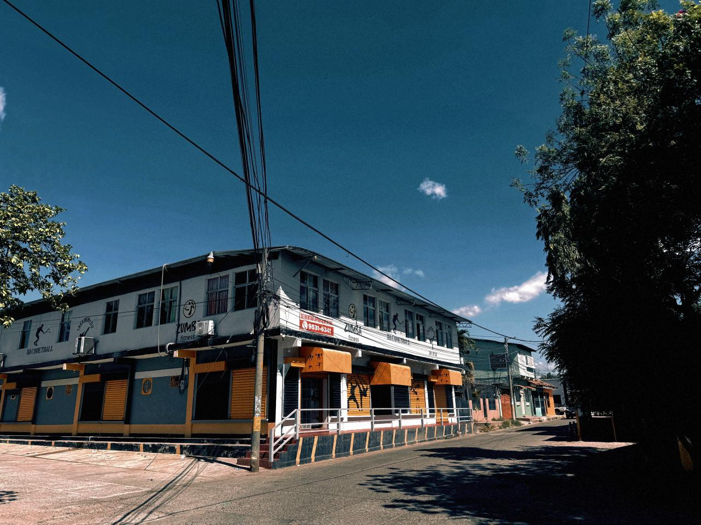

12+
Años de experiencia
1000+
Miembros transformados
2012 - El Comienzo
BodyPerfect Gym inauguró su primera planta el 15 de noviembre de 2012, con la presencia del entonces alcalde Quintín, marcando el inicio de un proyecto que cambiaría vidas.
Nacida de la necesidad de un espacio de calidad donde la disciplina y el bienestar fueran prioridad, la visión familiar se convirtió en un referente fitness en la región.
De una sola planta a un centro integral de entrenamiento, manteniendo siempre los valores familiares y el compromiso con cada miembro de nuestra comunidad.